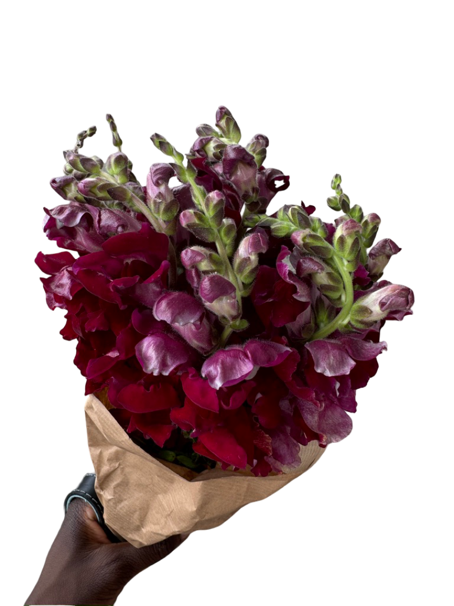

Hello, My name is Elikem Kalitsi and I’m a Undergrad from Spelman College who is graduating in December 2025. I’ve have a plethoras of skill and experience in computer science. Thus, I wanted to create my own website to hold as a portfolio of my greatest achievments. As I am preparing for graduate school and full time roles please take a look at my experience page! Also take a look at my food review page to see my second favorite thing I love to do, yap about food! I hope you enjoy your visit --- Elikem